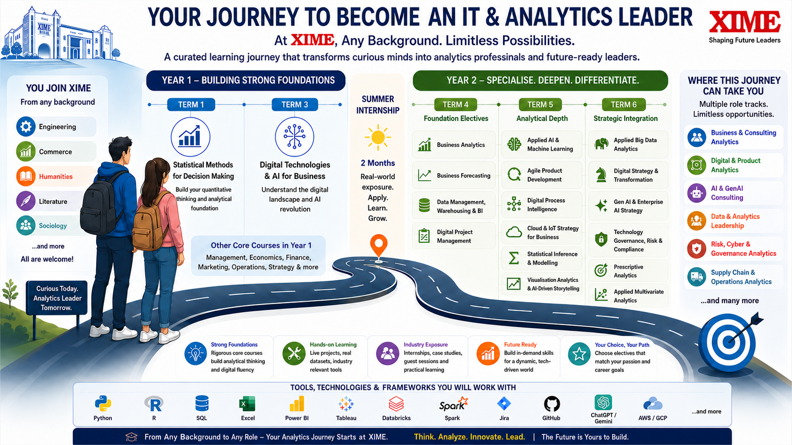

The Analytics Journey
How this domain transforms you from student to future-ready leader.

Course Catalogue
Click any course to see tools, technologies, frameworks and learning outcomes.
SMDM (Term 1) and DTAI (Term 3) are mandatory core courses for the entire cohort. Year 2 electives are offered in Terms 4, 5 and 6. A minimum of 6 electives across Terms 4–6 is required to claim the Analytics major.
Your goal is an IT or Analytics role across any industry. Go deep into the Analytics domain. A typical combination is 3 Analytics electives per term + 1 from another domain.
Your goal is a specialist role in Marketing, Finance, Operations or HR. Take 2 electives per term from your chosen domain and pair with 2 Analytics Mandatory electives each term.
Course Dependency Graph
Arrows show prerequisite relationships. Click any node to view course details.
Role Categories
14 career tracks mapped to this curriculum. Click any card to see competencies, tools and course recommendations.
Course Pathway by Role
Your elective roadmap across Terms 4, 5 and 6. Prioritise Mandatory first, then Recommended.
Minimum 6 electives across Terms 4–6 required to claim the Analytics major.
| Type | Role Category | Term 4 | Term 5 | Term 6 | |||||||||||
|---|---|---|---|---|---|---|---|---|---|---|---|---|---|---|---|
| BANA | BUFO | DMBI | DPMG | AAML | SIAM | CISB | APRD | DPIN | VAAS | GESB | DSTR | TGRC | ABDA | ||
Campus Recruiters
Companies that have visited XIME campus exclusively for Analytics recruitment. Filter by role category to find your best-fit employers.
19 companies — 28 roles mapped across 13 Analytics role categories. All recruited exclusively for Analytics profiles.